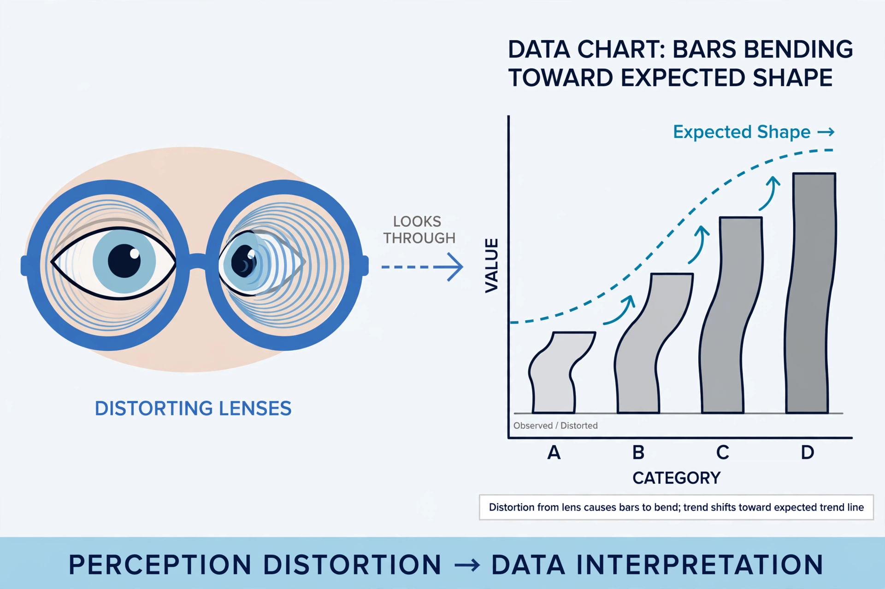

Observer bias is a type of detection bias that occurs when a researcher's expectations, prior knowledge, or opinions systematically distort what they observe or record during a study. It arises in any discipline where data depend on human observation, from clinical trials to field ethnography and animal behaviour studies.
Observer bias includes several related phenomena. The observer-expectancy effect describes bias arising from the researcher's hypotheses, which can shape both the recording of data and the behaviour of subjects who pick up on the researcher's cues. Subject-expectancy effects, in which participants act according to what they believe is expected of them, can compound the problem. Bias may also enter through selective attention, selective recall, and ambiguous measurement categories that leave room for judgement.
Common countermeasures include blinding or masking observers to group assignments, using clear operational definitions and standard scoring criteria, training observers, employing multiple independent raters and reporting inter-rater reliability, and automating data collection where possible. In systematic reviews, risk-of-bias tools explicitly assess whether outcome assessors were blinded.
See also: Observer-expectancy effect, Cognitive bias, Confirmation bias, Blinded experiment.